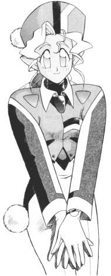

Crossover FanFics: D-J
|
This page holds crossover fan fiction that includes Tenchi Muyo. Crossovers
are very intresting. They really change the character interactions since
the mixing of diffrent worlds, series, situations, can change the dynamic
of the story. Please go here if you would like your
works published. |
New * A-C * D-J
* K-R * S-Z |
D
D.Hunt (Nite2k@aol.com)
DAN_THE_MAN
(dan__2003_98@yahoo.com)
Chris Davies
(CDavies@gpu3.srv.ualberta.ca)
Andrew "da drew-meista" Day
(kun_tow@hotmail.com)
Death Giver
(deathgiver2000@yahoo.com)
Demonicuss
(D_Wendorf@hotmail.com)
Tommy "Dobber" DeYoung
(tddeyoung31785@cs.com)
-
Dimension Crisis
Crossover Tenchi muyo / Ronin Warriors and Dragonballz this could
be trouble. (Multipart) -11/13/2001
D.Hunt (Nite2k@aol.com)
Diggity963
(jdaso@homestead.com)
Disgruntled Bubba
(celtic_wolfman_42@yahoo.com)
-
Freezer Muyo!
A series that connects the history of Dragonball and Tenchi completely
(Multipart) -3/11/2002
Dominus
(dark_knight_dominus@yahoo.com)
-
The 6 Warriors of Kagato
Voltage Fighter, Sailor Moon, Tenchi crossover. 26KB -8/21/2000
-
Return Of Ozaki
Cont. of The Six Warriors of Kagato, a Voltage Fighter, Sailor Moon,
Tench Crossover. 27KB -8/21/2000
Thomas "009" Doscher
(doscher009@hotmail.com)
Doushi Josh Z
(jvrivera@mail.monmouth.com)
Robert "Tenchi Saotome " Duncan
(SaotomeTenchi@aol.com)
-
Tenchi 1/2
A Ranma/Tenchi crossover with a twist. Tenchi goes on that training
trip with Ranma and gets a curse to boot! Ranma and Tenchi arrive at the
Tendo Dojo. (Multipart) -2/26/2001
E
Nicholas Eckert
(eckert.36@osu.edu)
Nick S. "Admiral Valdemar" Edwards
(nick@edwards2000.freeserve.co.uk)
Vincent Eskilsson
(_8thlegion_max@mail.bip.net)
F
Falcon01
(yoneshiggoo1@hawaii.rr.com)
Blark Feeglewater
(Chippud@aol.com)
Justin Felder
(attitude29018@hotmail.com)
-
Supergirl
Ryoko decides she wants to save Tenchi. Comedic. (Multipart)
-8/10/2001
Fenix020202
(Fenix020202@Hotmail.com)
Mike Fenton
(mpfenton@hotmail.com)
-
Tenchi Booyo!
Chicken Boo plays some silly head games with the girls. He is way
dumber than advertised! 15KB -11/27/2000
Patrick "Eat My Chainsword" Findlay
(ahriman66@attbi.com)
-
Eye of Terror
Washu's newest invention opens a gateway to the Warhammer 40K Universe,
prompting the forces of chaos to launch a Black Crusade to Earth. 14KB
-5/1/2002
The Fish
(thebigfish60@hotmail.com)
-
Super Powers and Super Villins
Strange events bring Gohan and Vegeta from DBZ into Tenchi's world.
Also new genius scientist Dr. S joins the group. Tenchi admits his love for
one of the girls, and Kagato is back. The fate of the universe once
again is in the hands of Tenchi and gang. (Multipart) -3/11/2002
Trevor "Ultima Havoc" Flickinger
(tsaiyan@bellsouth.net)
-
Evangelion Muyo
An adult Tenchi assists the Nerv Corporation in the battle to save
Earth from the third impact. (Multipart) -9/22/2001
-
Tenchi Muyo TV2
The unofficial sequel to Tenchi Muyo TV! Rated R for violence and
strong language. In this fic, Kain comes back to life, and why is Achika
on the Grande Kaio-sama's planet? A Tenchi TV, DBZ, EVA, FF VII (and more)
crossover. (Multipart) -11/15/2001
-
Hell Awaits - Chapter One : "Astro
Madness"
Hacker the Leet is back in action to battle the horrors of Beelzebub.
11KB -3/26/2002
-
Tenchi Muyo Meets Mobile Suit Gundam: Adventures
of the Nightingale - Chapter One : "Blast to the Past"
Komobito Lewa Hitomi and myself (the most hated fan fic writer of
all time) are having a contest to see who could write up the best Tenchi
Muyo TV + Char's Counter Attack crossover. The winner will continue to finish
their story while the loser throws his series away in the trash. 8KB
-9/13/2002
Chris "Munky" Fields
(VegDrkFury@aol.com)
Pierce "Spyboy" Flemming
(Spyboy_01@yahoo.com)
Trevor "Ultima Trev" Flickinger
(superultimatrev@netscape.net)
J.D. Freeman
(j_delight@hotmail.com)
-
Masaki Ball Z!
This DBZ/Tenchi fic explores a world where Sasami meets Gohan and
Ryoko gets drunk with Trunks. (Multipart) -2/26/2001
F.T.W.
(IchBinEineLeiche@aol.com)
Fugie Fan Fic Co.
(achilles100@excite.com)
-
Hoggish's New Rascal
Hoggish Greedly’s back and its up to the Tenchi gang to stop
him! There’s a little Yu Yu Hakisho thrown in there too. 30KB
-9/17/2002
G
Mat Gilbert
(mat.gilbert@worldnet.att.net)
Global
(legacyglobe@yahoo.com)
-
Here's The Deal
A tale of the brave warriors of Yuck and their legendary battles against
the evils of Bill Cosby, Jello, and Gazel. 55KB -2/5/2001
David Gordon
(iczel_prime@hotmail.com)
Randall "Rando_san7" Grafel
(rando_san7@hotmail.com)
Graffito Tag
(graffitotag@hotmail.com)
-
Tenchi's Big Bidness
New 'business ventures' get everyone in some big trouble with some
vengeful competitors. 17KB -5/6/2002
-
Tenchi Moron
A humorously exaggerated look at Tenchi's life...heh, 'exaggerated'
probably isn't a strong enough word, and maybe 'humorous' isn't either.
(Multipart) -5/6/2002
Andrew "Kain The Seeker" Graham
(Kaintskr@aol.com) and Deunan
(Deunan@aol.com)
-
Homecomings
A x-over involving the El-Hazard universe and the Tenchi
universe(OVA.).What if the people from El-Hazard has some sort of family
connection with the Juraians?Also,Tenchi comes to terms about his feelings
with both Ayeka and Ryoko. 268KB -11/27/2000
The Great Rage
(Barry_Beelzebub@yahoo.com)
William Benjamin Grilliette
(Evilpii@juno.com) and Jeff Williams
(Angelbane@geocities.com)
H
Robert "Pmasters" Hadley
(Pmasters@webtv.net)
Matthew Harrison
(musko_no_kaji@hotmail.com)
Zach Haugen (Scurvy@wfol.net)
Zach Haugen (Scurvy@wfol.net)
and Adam Jensen
Michael "Mandalorian625" Hayes
(mhayes@maine.rr.com)
Robert Hazelton
(nchabrier@yahoo.com)
-
Eyes of Midnight - Chapter 1 : "No Need
for a Shattenjager"
This is the first chapter of a Tenchi Muyo/Gabriel Knight cross over.
A missing sister, a power flux during a raging storm in the midst of a Japanese
evening, the disappearance of Yosho… In the beginning, all seems innocent
until events unfold. -- Gabriel Knight is contacted by his friend and partner
Grace Nakamura who claims that her sister has been kidnapped, a bloody bed
the only clue to what happened. 29KB -5/31/2001
Ronny "Tharkon" Hedin
(Thark@swipnet.se)
Brian "The Great Animan" Heller
(animan3@yahoo.com)
-
Trunks' Theory of Time and Space
A prophet's words forgotten, a fierce warrior from the future, and
the unlikely gathering of the universes greatest heros. All time will depend
on the battles that follow. (Multipart) -12/22/2001
Alex "Oof" Hebert
(darksavior15@yahoo.com)
-
Crossed Spectrums
We meet the heroes (from Smash Bros Melee, OoF! and of course Tenchi
Muyo) something has brought them together with an evil purpose in mind.
(Multipart) -5/30/2002
Christina "Ryoko_Masaki_4eva" Horton
(shorton86@hotmail.com)
-
No Need for CardCaptors
The Masaki house is transported to an unknown land where kids
chase...cards??? 16KB -9/17/2001
Horosha
(V_Bashaw@hotmail.com)
-
Strange Days
Mulder and Scully go to Japan to investigate the destruction of the
middle section of the Seto Bridge. (Multipart) -5/1/2002
John "CrowBar" Hurst
(MakoReno@aol.com)
John L. Hoelscher
(Aeris-Gainsborough@juno.com)
Thomas Holmes
(Pokemario@aol.com)
-
Nintenchi
Sakuya fans, rejoice! She's back, but so's her old rival. Then, it's
off to a mystical place that's unlike anything either of them have ever
seen...well, except in video games. (Multipart) -5/28/2002
Kevin "Crusader" Hughes
(crusader_esper@hotmail.com)
I
Ilumanae (ilumanae@yahoo.com)
-
PETRAS
Something's wrong in the Masaki Home. (Multipart) -11/28/1999
Insane (ShaneInsane@aol.com)
-
"Of Electric Mice and Men"
Ryoko messes up one of Washu's experiments and the gang are thrown
into the world of Pokemon. 36KB -10/8/2001
-
Resident Muyo: Nemesis
Tenchi, Ryoko and Ayeka get transported to a place where undead monsters
walk the streets. Can Sasami, with the help of Washu help them? 74KB
-10/8/2001
Invader Zim
(invader__zim@hushmail.com)
-
Tenchi's Invaded
Just a regular day at Tenchi's place...until an alien comes to invade
Earth! Tenchi and Invader ZIM cross-over. (Multipart) -12/22/2001
-
No Need for Vampires! - Chapter 1 :
"Infected"
Tenchi and the others are invited to a party;which is located on vampire
feeding grounds!Tenchi and Blade X-over. 19KB -12/22/2001
-
The World Martial Arts Tournament Returns! - Chapter
1 : "The Competetors"
Tenchi,Ryoko,Ayeka and Yosho enter the World Martial Arts Tournamet
for some easy money,but find more then what they bargained for.A Tenchi
Muyo,Dragon Ball and Bloody Roar 2 X-over. 32KB -12/22/2001
-
The War
Tenchi and the others are caught in a war; One that can't be stopped
without death! Tenchi and mutiple Mobile Suits from different Gundam universes.
(Multipart) -12/23/2001
-
Buu's Revenge - Capter 1 : "Meeting"
When Tenchi and co. goes for a picnic, they meet the DBZ gang! Some
of them, anyway. 11KB -5/3/2002
John M "supreme_guyver" Irish
(supreme_guyver@hotmail.com)
-
Final Tenchi VIII
Tenchi and the gang have some unexpected guests as two Gardens rage
war and slam into Tenchi's house. (Multipart) -7/22/2001
J
J (j_koei@hotmail.com)
Jacob Jacker
(Stormmaster4248@aol.com)
Jaf (JuggaloJaf@aol.com)
Jaiq da Goose
(GOOSE20693@aol.com)
-
Tenchi A. Heinlien
This is a "what if" to Robert A. Heinlien's book "Glory Road." 5KB
-12/23/2000
-
I Fell Through a Plot Hole
Tenchi Universe/Street Fighter/Bubble Gum Crisis, Tokyo 2040/Gundam
Wing/Ed,Edd, and Eddy X-over, where Mihoshi will try to show how bad plot
holes can be. 10KB -12/29/2000
Jayman (JAAAg18@aol.com)
-
Soul Hunters
The fearsome four invade a fanfic and have some fun. Cell begans to
have second thoughts. (Multipart) -5/4/2002
JB747 (jb747@sofhome.net)
Jim Ohki (JimOhki@aol.com)
Joe
(mihoshi_rules@hotmail.com)
Scot R. "Gaian Knight" Johnson
(johnsonit@hotmail.com)
William L. Johnson
(lord_mordor_the2nd@yahoo.com)
-
A Father and Son's Betrayal
A child from the future traveles back in time to play a deadly game
of cat and mouse with his father, and the game includes DBZ SPECIAL FORCES
as well as Tenchi's friends. (Multipart) -2/12/2002
Ben Jonas
(insaneben@yahoo.com)
-
Cell-Out!
A Shin Tenchi Muyo!/DBZ crossover story. What happens when Cell attacks
Tenchi's high school? (Multipart) -9/19/2001
Jusenkyo Guide
(Jusenkyoguide@hotmail.com)